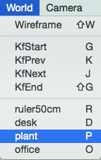
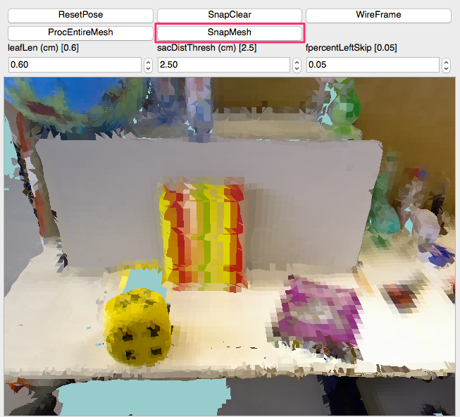
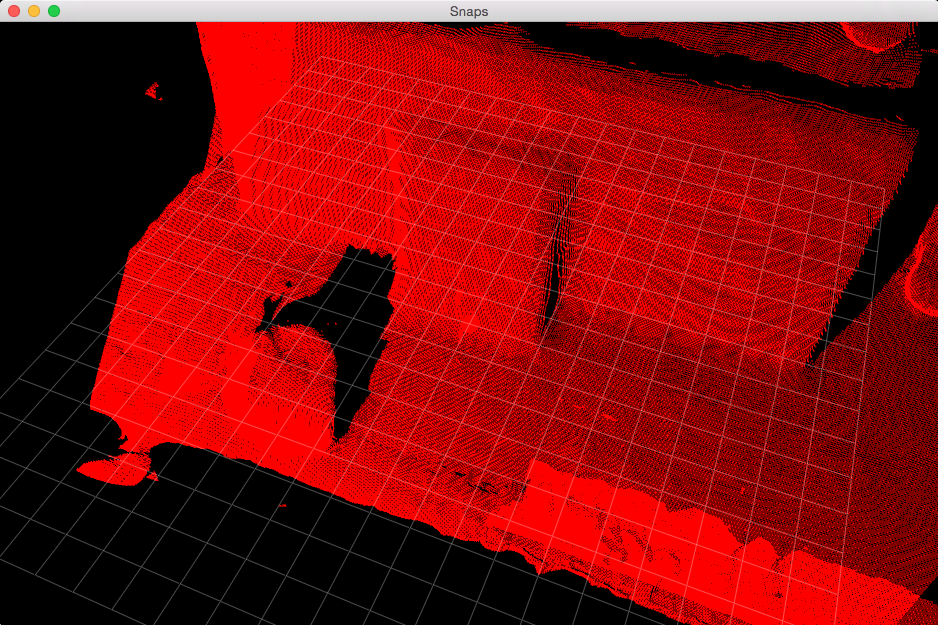
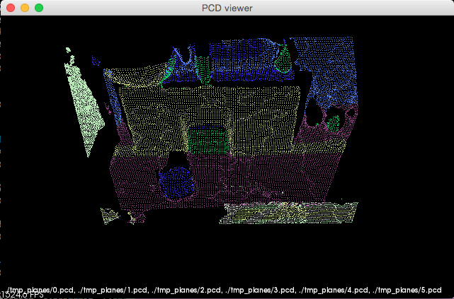
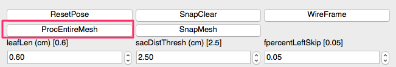
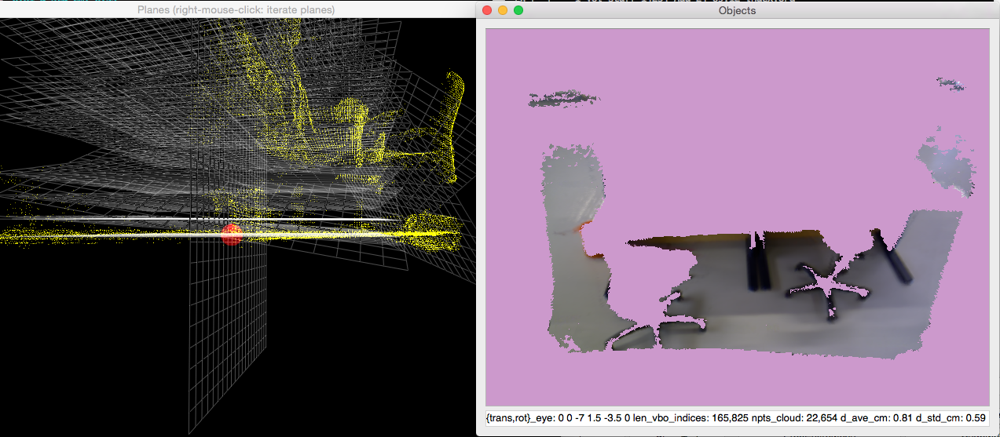
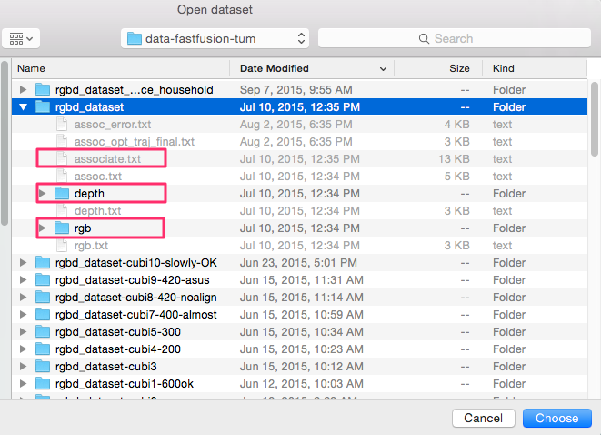

pyFastfusion Manual v2.1
Table of Contents
- 1. Abstract
- 2. Prerequisites
- 3. Installation
- 4. Interfaces
- 5. Basic Operations
- 6. Advanced Operations
1 Abstract
This software provides a full scene processing pipeline for volumetric reconstruction and plane-based prototyping of 3D scenes using an RGB-D sensor. The DVO-SLAM module first estimates the camera trajectory, then the FastFusion module performs volumetric reconstruction of the scene. For scene analysis, the plane estimation module finds planar models supported by point clouds corresponding to several dominant planar objects that characterize the environment.
2 Prerequisites
This software assumes the following run time environment:
- Hardware: 4GB RAM, 1GB Video RAM.
- Operating system：64-bit Ubuntu Linux 12.04 or later.
- Interpreter：Python 2.7.x
- OpenCV 2.4.x or 3.x installed in the system.
3 Installation
3.1 Building and installing dependent libraries locally
3.1.1 Python packages
Install Python-related packages as follows:
sudo apt-get install python-pip sudo pip install pyqtgraph cython libeigen3-dev libflann-dev
3.1.2 PCL-1.8
Install the Point Cloud Library as follows.
3.1.3 Python-PCL wrapper
Install the Python-PCL wrapper library as follows.
- Compilation
cd python-pcl-master/ export PKG_CONFIG_PATH=../pcl-master/build/local/lib/pkgconfig make
- Checking output
Make sure the test script works as follows:
export LD_LIBRARY_PATH=$LD_LIBRARY_PATH:../pcl-master/build/local/lib python segment_cyl_plane.py
Expected output:
23760 23760 [-0.43493905663490295, -0.5133732557296753, 0.7397810220718384, -0.47040078043937683] [0.05424264818429947, 0.08664929121732712, 0.7785331606864929, -0.021071095019578934, 0.8386908769607544, 0.5442001223564148, 0.038754820823669434]
3.1.4 PCL-SAC library
Install the PCL-based Sample and Consensus library as follows.
3.1.5 FastFusion library
Install the FastFusion library modified for use in the AR software.
3.2 Testing installation
After installing all the dependent libraries, you will be able to launch the AR software as follows:
cd modeler ./main.py

Figure 1: Launching the AR software.
4 Interfaces
The main interface window contains the following GUI components:

Figure 2: The main interface window.
- World View – In this view component, the camera (a rectangle filled in
black), its trajectory (transparent rectangles), polygons in the scene, and
the world coordinate axes are displayed. The view angle is always pointing
toward the origin. The view can be interactively controlled as:
- Mouse drag – Change the view point.
- Mouse wheel – Change the view scale.
- World Control – Apply operations related to 3D world models.
- "Load Dataset" button – Select a directory containing RGB-D data and/or a 3D model.
- "Build Model" button – Build a 3D model using the RGB-D data in dataset directory.
- "Save Model" button – Save the 3D model rendered in World View into a selected directory.
- "Clear Model" button – Clear the 3D model rendered in World View.
- Trajectory Control – Select a camera along the trajectory:
- "|<" button – Select the first camera pose in trajectory.
- "<" button – Select a previous camera pose in trajectory.
- ">" button – Select a next camera pose in trajectory.
- ">|" button – Select the last camera pose in trajectory.
- "ShowTraj" button – Toggle the visibility of the trajectory and axes.
- Trajectory Info – Display the index and time stamp of the selected camera in trajectory.
- Camera View – In this view component, the rendered scene by the current
camera (filled in black) is displayed. The view and be interactively
controlled as:
- Mouse-left drag up – Increase camera pitch.
- Mouse-left drag down – Decrease camera pitch.
- Mouse-left drag right – Increase camera yaw.
- Mouse-left drag left – Decrease camera yaw.
- Mouse wheel – Translate the camera forward/backward.
- Mouse-middle drag up – Translate the camera upward.
- Mouse-middle drag down – Translate the camera downward.
- Mouse-middle drag right – Translate the camera rightward.
- Mouse-middle drag left – Translate the camera leftward.
- Mouse-right click – Pick a 3D point on a polygon.
- Camera Control – Apply various operations to the currently selected camera:
- "ResetPose" button – Reset the camera pose to the original pose in trajectory.
- "SnapClear" button – Clear the point cloud generated.
- "WireFrame" button – Toggle the rendering mode for polygons (filled or mesh).
- "ProcEntireMesh" button – Apply RANSAC-based planar surface extraction using all polygons in the scene.
- "SnapMesh" button – Generate a point cloud based on the polygons rendered in the view.
- Plane Estimation Control – Adjust the parameters used in RANSAC-based planar
surface extraction:
- "leafLen" value – The grid size used for downsizing the point cloud obtained from a mesh model.
- "sacDistThresh" value – The deviation threshold of the vertical distance between a point and a hypothesized plane in RANSAC.
- "fpercentLeftSkip" value – The stopping criteria when to terminate the iteration of extracting new planes from a point cloud. Points belonging to an extracted plane are excluded from the point cloud. Hence the number of points in the point cloud decreases. The planar extraction algorithm stops when the number of points left is less than fpercentLeftSkip * N, where N is the initial number of points of the point cloud.
- Camera Info – Displays the deviation of the current camera from its pose in trajectory. The format is (x [m], y [m], z[m], pitch [deg], roll [deg], yaw [deg]).
- Measurement Info – Displays two 3D points picked up by mouse-right clicks. The Euclidean distance of the two points is also shown in meters.
5 Basic Operations
5.1 Loading a mesh-based model
5.1.1 Pre-installed models
There are three pre-installed mesh-models:
- "ruler50cm" – Corresponding dataset stored under path of worlds/world-ruler-50cm
- "desk" – Corresponding dataset stored under path of worlds/world-freiburg-gt-count80
- "plant" – Corresponding dataset stored under path of worlds/world-e6p-full400
- "office" – Corresponding dataset stored under path of worlds/cubi10-slowly-OK
To load one of them, follow Menu > World and click its title. After loading, World View and Camera View are updated based on the load scene.

Figure 3: Loading the "plant" model.
5.1.2 Structure of model data
Internally, a model data directory contains the following files that define a model:
- npa_vbo_vertex.npy – OpenGL VBO vertex data of a mesh-model.
- npa_vbo_index.npy – OpenGL VBO index data of a mesh-model.
- list_traj_cam_fusion.npy – Translation data of the camera trajectory.
- list_rot_cam_fusion.npy – Rotation data of the camera trajectory.
- list_stamp_cam_fusion.npy – Time stamps of the camera trajectory.
For manually creating a new model dataset, refer to the Advance Operations section.
5.1.3 Loading a model using a dialog window
Press "Load Dataset" button to launch a directory selection dialog. Select a directory containing model data files (*.npy) explained in the previous section. After loading, World View and Camera View are updated accordingly.

Figure 4: Loading a model using a dialog.
5.2 Moving the camera along the recorded trajectory
To move a camera along the trajectory, click the buttons in Trajectory Control. World View and Trajectory Info are updated according to selected camera poses on the trajectory.
5.3 Moving the camera off the recorded trajectory
To move the camera to positions not on the trajectory, interact with Camera View with a mouse. Supported operations for controlling the camera are explained in the Interfaces section.
5.4 Measuring Euclidean distances
To measure the Euclidean distance between two 3D points on polygons, right-click two different pixels in Camera View. Each clicked pixel is instantly converted into a 3D coordinate on the rendered mesh model. In Measurement Info, two 3D coordinates and their corresponding distance is displayed.
5.5 Generating point clouds by snapping the mesh model
5.5.1 Snapping by the camera
To snap meshes observed by the camera, navigate the camera using the Camera View control interface and press the "SnapMesh" button. Thereafter, related interface components (Snaps Window, PCL Viewer, Planes Window, and Objects Window) are updated as explained in the following sections.

Figure 5: Snapping polygon surfaces seen in the camera view.
5.5.2 Snaps Window
In Snap Window, a point cloud with dense 3D points on the polygon surfaces is plotted. For inspection, translation/rotation and zoom-in/out operations are supported.

Figure 6: Snapping polygon surfaces seen in the camera view.
5.5.3 PCL Viewer
The dense point cloud in Snap Window is downsized according to the grid length of the "leafLen" parameter. The downsized point cloud is then segmented by a SAC-based planar model extraction algorithm and each planar segment found is presented in a different color.

Figure 7: Point clouds generated by PCL.
5.5.4 Planes/Objects Window
In Planes Window, extracted planar models are displayed. Using right-mouse clicks, you can iterate the currently selected plane. In Objects Window, polygons corresponding to the selected plane are displayed. For example, the following figure shows a planar model and its neighboring polygons belonging to a desktop surface.

Figure 8: Estimated planar models and corresponding polygons.
5.6 Applying planar segmentation against the entire mesh model
In the previous section, we performed planar model segmentation using only 3D points visible in the camera. On the other hand, it is possible to apply the same algorithm against the entire mesh model in the scene by pressing the "ProcEntireMesh" button.

Figure 9: The "ProcEntireMesh" button.
The estimated planar models are based on a downsized point cloud that represents all polygon surfaces in the scene.

Figure 10: Detected planar models based on all 3D points in the scene. The selected plane corresponds to the ground floor.
6 Advanced Operations
6.1 Recording a new RGB-D dataset
In this section, we explain how to 1) record original RGB-D sequences using an OpneNI-compatible sensor and 2) obtain the estimated trajectory with the DVO-SLAM algorithm.
6.1.1 Building dependent libraries
To record RGB-D sequences with OpenNI compatible sensors (e.g. Apple Primesense Carmine 1.09), we install OpenNI2, OpenNI, and Sensor libraries. Although OpenNI2 is mainly used for driving the sensors, the Sensor library (and its dependent OpenNI library) is also required for Primesense devices.
- OpenNI2
We locally install this library to drive RGB-D sensors.
sudo apt-get install libudev-dev openjdk-6-jdk cd OpenNI2-master-2.2.0.33/ ALLOW_WARNINGS=1 make
- OpenNI-master
We globally install this library to compile Sensor-master.
unzip OpenNI-master.zip cd OpenNI-master/Platform/Linux/CreateRedist/ ./RedistMaker cd ../Redist/OpenNI-Bin-Dev-Linux-x64-v1.5.7.10/ sudo ./install.sh
- Sensor-master
We globally install this library to support Primesense devices.
unzip Sensor-master.zip cd Sensor-master/Platform/Linux/CreateRedist/ ./RedistMaker cd ../Redist/Sensor-Bin-Linux-x64-v5.1.6.6/ sudo ./install.sh
- Tesing NiViewer of OpenNI2 with an RGB-D sensor
cd OpenNI2-master-2.2.0.33/Bin/x64-Release/ ./NiViewer
6.1.2 Recording using an RGB-D camera
- Running recording scripts
To record a new RGB-D sequence, connect an RGB-D sensor to a USB port, move to the OpenNI2's "Bin/x64-Release" directory, make symbolic links to support scripts, create a directory called "data-fastfusion-tum" that stores recorded data, and invoke the recording script as follows:
cd OpenNI2-master-2.2.0.33/Bin/x64-Release ln -s ../../../recorder/associate.py . ln -s ../../../recorder/test_save_frames_dvo_slam.py . mkdir data-fastfusion-tum ./test_save_frames_dvo_slam.py 100
In the example above, we record 100 RGB-D frames (at 30fps) using the sensor.
- Structure of the recorded data
The recorded data resides in "data-fastfusion-tum/rgbd_dataset". In the newly created "rgbd_dataset" directory, the data is organized as follows:
- depth – a directory containing depth images <timestamp>.png
- depth.txt – a list of the names of depth image files
- rgb – a directory containing RGB images <timestamp>.png
- rgb.txt – a list of the names of RGB image files
- assoc.txt – a list of the associations of depth and RGB images
6.1.3 Estimating the camera trajectory with DVO-SLAM
We use DVO-SLAM to estimate the camera trajectory based on recorded the RGB images and depth images.
- Building DVO-SLAM
ROS Fuerte is required to build DVO-SLAM. Set up ROS Fuerte as follows:
sudo apt-get install ros-fuerte-desktop-full source /opt/ros/fuerte/setup.bash
Using the build tools provided by ROS Fuerte, compile the dvo_core node and its dependencies as follows:
cd dvo_slam export ROS_PACKAGE_PATH=$ROS_PACKAGE_PATH:`pwd` rosmake dvo_core dvo_ros dvo_slam dvo_benchmark
In case of any compile errors, we refer the reader to the original build instructions of DVO-SLAM: https://github.com/tum-vision/dvo_slam/
- Applying DVO-SLAM to the recorded RGB-D data
./run_with_rgbd_dataset.sh
By default, the script uses dataset found in the path of ../OpenNI2-master-2.2.0.33/Bin/x64-Release/data-fastfusion-tum/rgbd_dataset To change it, you many want to modify DATA_FF and DATASET_DIR variables found in the script. Before executing DVO-SLAM, the script shows bound parameters and waits for "Enter" to continue. Press "Enter" to continue.
Upon completion, DVO-SLAM generates the following output files inside the rgbd_dataset directory:
- assoc_opt_traj_final.txt – the estimated 6DoF camera trajectory
- associate.txt – a list of the associations of depth, RGB, and camera pose information
6.2 Reconstructing a mesh-based model by FastFusion
6.2.1 Setting the RGB-D data source
Press "Load Dataset" button in World Control to launch a directory selection dialog. Select a directory containing RGB-D data (associate.txt and depth/rgb directories), where associate.txt is obtained by DVO-SLAM as explained in the previous section. After selecting a proper directory containing RGB-D data, "Build Model" button become enabled.

Figure 11: Loading RGB-D data using a dialog.
6.2.2 Reconstruction
Press "Build Model" button to apply to build a new model based on the RGB-D data. The new model is incrementally build and rendered live in World Window and Camera Window. During model reconstruction, all model-related interfaces (Build/Save/Clear buttons) become disabled and enabled back again on completion.

Figure 12: Starting model reconstruction.
6.2.3 Saving and clearing the reconstructed model
Press "Save Model" button to save the current model as (*.npy) files. The data is saved in a directory selected in a dialog. Press "Clear Model" button to remove the current model rendered in World Window and Camera Window.